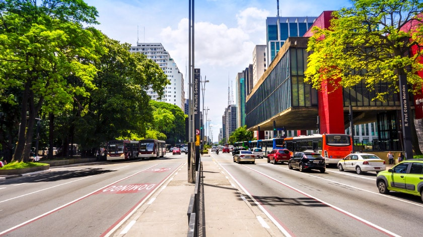

Pão de Açúcar
Na Cidade Maravilhosa, a lista de pontos turísticos é grande, mas o conjunto de
morros está dentre os mais estonteantes e visitados. Com 395 m de altura, o
Pão de Açúcar é lindo de se ver mesmo de longe, mas também rende um passeio muito
agradável de bondinho e uma visão 360° da cidade. Lá em cima ainda tem anfiteatro,
restaurantes, lojas e o Cocoruto, um museu que conta a história do bondinho.
Cristo Redentor
Ícone do Rio de Janeiro, o Cristo é, sem dúvidas, um dos mais célebres pontos
turísticos do Brasil. E sua fama roda o mundo! Ao lado da Muralha da China, do Coliseu
e do Taj Mahal, a famosa estátua integra a lista das Sete Novas Maravilhas do
Mundo Moderno, feita pela votação da New 7 Wonders Foundation. Situado no topo
dos 710 m de altura do Morro do Corcovado, o monumento de 38 m, impressiona pela
imponência desde sua inauguração, em outubro de 1931. Todos os anos, mais de 600 mil
pessoas atravessam a Floresta da Tijuca com o Trem do Corcovado e chegam aos pés da estátua
num mix de emoção, contemplação e fé.
Ilha Grande
Além de ser a maior ilha da baía de Angra dos Reis, a área de 190 km² possui
grande parte recoberta por natureza densa emoldurada pelo azul do mar. Com atrativos
como trilhas ecológicas, passeios de barco e mergulhos nas águas transparentes, Ilha
Grande é destino de muitos turistas todos os anos, assim como outras ilhas e praias
do arquipélago. A vegetação formada por Mata Atlântica, mangue e restinga contribui para
o vilarejo se tornar ainda mais atraente, cercado por verde. A maior ilha do estado do Rio de
Janeiro e a quinta maior ilha marítima do Brasil é também grandiosa em beleza!
Centro Histórico de Paraty
Localizada a apenas 200 km da capital fluminense, a cidade de Paraty é perfeita
para os apreciadores de história, romance e literatura. O Centro Histórico do
município é considerado Patrimônio Nacional pelo IPHAN e “o conjunto arquitetônico
colonial mais harmonioso” do Brasil pela UNESCO. Com 33 quarteirões, suas ruas possuem
calçamento pé de moleque e igrejas e casarões de arquitetura colonial que complementam
o cenário histórico. Em meio à serra, entre o litoral paulista e fluminense, o destino
é bastante procurado por turistas em busca de passeios de escunas até as ilhas
paradisíacas da região e atrações culturais, como a Festa Literária Internacional
de Paraty, a FLIP.
Avenida Paulista

A avenida, um dos pontos turísticos mais queridos de São Paulo e do Brasil, é
símbolo da capital dos negócios e também um grande polo cultural. Nos 2.800 m de
extensão marcados pela arquitetura de Lina Bo Bardi no Museu de Arte de São Paulo,
pelo verde do Parque Trianon e pelas antenas de rádio, o dia segue apressado.
Conforme o sol vai se despedindo e o expediente chegando ao fim, os arranha-céus se
iluminam, o happy hour começa, as mesas nos bares lotam, os copos esvaziam e as
programação cultural tem início. Ao longo da Avenida Paulista tem muito o que ver
e fazer e suas célebres ruas paralelas não ficam atrás. Aos domingos e feriados a
via se torna exclusiva para pedestres.
Parque do Ibirapuera
O mais importante parque urbano de São Paulo, o Ibirapuera é ponto de encontro
de amigos e famílias. No espaço de quase 1.600 milhão m² de área verde em meio a
importantes avenidas da cidade, há atrações para todos os gostos e idades, como
passeios de bike e skate, jogos de futebol, caminhadas, corridas ou simplesmente
um descanso em meio ao verde. A fauna e flora presentes no ambiente garantem o
cenário de tranquilidade, com mais de 160 espécies de animais, além de árvores
como ipê, jaqueira e pau-brasil. O local é ainda grande centro cultural, reunindo
museus, pavilhões, planetário, auditório e exibições de peças de teatros a céu aberto.
Lago de Furnas
Minas Gerais é estado conhecido por suas igrejas históricas com ricos acervos
barrocos, mas a natureza também brilha em um destes pontos turísticos do Brasil.
Apesar de não ter um litoral, Minas tem o Lago de Furnas, chamado de “Mar de Minas”,
que faz a diversão dos viajantes. Suas águas cristalinas banham 34 municípios, formando
pequenos lagos, praias artificiais, cachoeiras, piscinas naturais e cânions com mais
de 20 m de altura. Um passeio especialmente procurado pelos turistas é o roteiro de barco
pelos cânions de Capitólio.